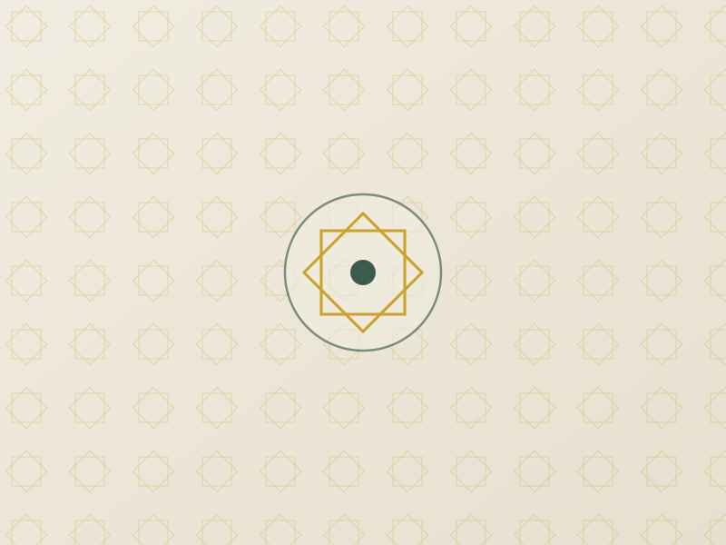

Our Services
From daily worship to children's education and family support, here is how Canolfan Iman Centre serves our community.
Daily Prayer & Congregational Worship
Five Daily Prayers
Fajr, Dhuhr, Asr, Maghrib, and Isha held daily — see our prayer times.
Jumu'ah
Friday khutbah (sermon) and congregational prayer, open to all. Arrive early as the hall fills up.
Taraweeh
Nightly Taraweeh prayers throughout Ramadan — see our Ramadan page for details.
Eid Celebrations
Eid al-Fitr and Eid al-Adha prayers and community celebrations for the whole family.
Madrasa & Islamic Learning

Children's Madrasa
Qur'an reading and memorisation, Arabic language, and Islamic values taught in a friendly, structured environment.
Adult Islamic Classes
Regular classes covering Qur'an, Tafsir, Hadith, and core Islamic knowledge for adults at every stage of learning.
Women's Study Circles
A dedicated space for sisters to study, ask questions, and build community together.

Zakat, Sadaqah & Food Drives
We collect and distribute Zakat and Sadaqah to those in genuine need, both within our community and beyond, and run regular food drives to support local families facing hardship.
- Zakat calculation guidance and collection
- Sadaqah (general charity) for ongoing needs
- Food parcels and emergency support referrals
- Confidential support — just ask the Imam or a committee member
Youth & Family Activities
Sports sessions, social events, leadership opportunities, and trips that help our young people grow in confidence and faith. See our dedicated Youth Activities page for the full programme.
Explore Youth ActivitiesHave a Question About Our Services?
Get in touch with Imam Mohamed or the committee — we're happy to help.
Contact Us